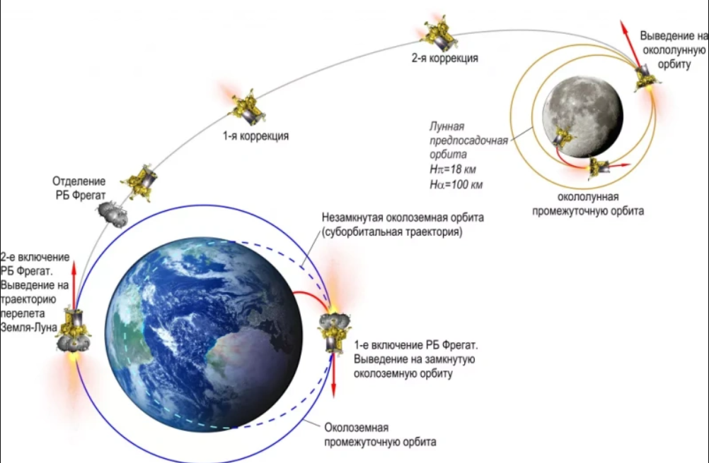
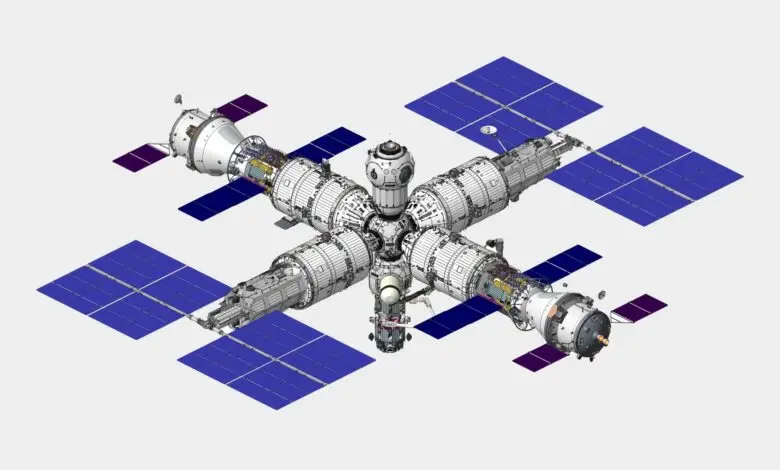
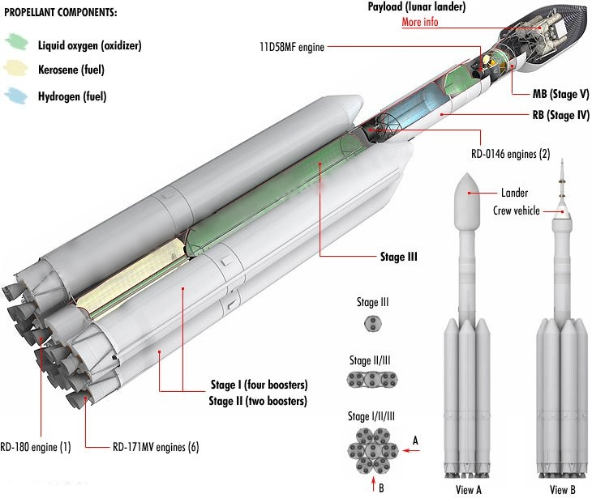

🌑 Программа «Луна-25, 26, 27»
Серия автоматических межпланетных станций для исследования полярных районов Луны. Цель — доставка грунта и создание инфраструктуры для будущей обитаемой базы.

Серия автоматических межпланетных станций для исследования полярных районов Луны. Цель — доставка грунта и создание инфраструктуры для будущей обитаемой базы.

Проект национальной орбитальной станции. Предполагается, что РОС придет на смену участию в программе МКС. Станция будет иметь открытую архитектуру и возможность смены орбиты.

Разработка ракеты-носителя сверхтяжелого класса для обеспечения пилотируемых полетов к Луне и создания крупных инфраструктурных объектов в космосе.
